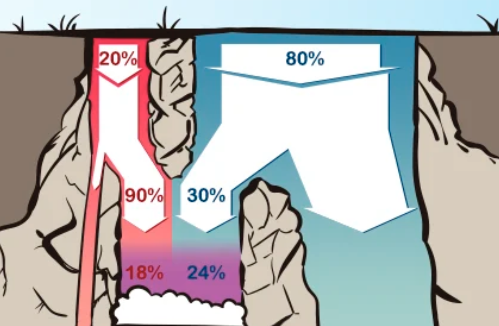

Ein Kommilitone erzählt dir, er programmiere gern.
Wie wahrscheinlich ist es, dass er Informatik studiert?
KIT Studentenpopulation
Informatikstudenten
keine Informatikstudenten
Dein Krankheitis-Test ist positiv.
- 20% der Bevölkerung hat Krankheitis.
-
Der Test erkennt Krankheitis mit 90% Sicherheit.
-
Bei gesunden Menschen ist der Test in 30% der Fälle positiv.
-
Wie wahrscheinlich ist es, dass du Krankheitis hast?
Dein Krankheitis-Test ist positiv.

Dein Feuermelder fängt an zu piepen.
-
Wie wahrscheinlich ist ein Brand an einem gegebenen Tag?
-
Wie wahrscheinlich ist es, dass der Feuermelder bei einem Feuer piept?
-
Wie wahrscheinlich ist es, dass der Feuermelder ohne Feuer piept?
-
Wie wahrscheinlich ist es, dass es brennt?
Lass es uns als Formel ausdrücken.
$$ P(A \vert B) = \frac{P(B \vert A) \cdot P(A)}{P(B)} $$
Lass es uns als Formel ausdrücken.
$$ P(H \vert e) = \frac{P(e \vert H) \cdot P(H)}{P(e)} $$
Lass es uns als Formel ausdrücken.
$$ P(H \vert e) =
\frac{P(e \vert H) \cdot P(H)}
{P(e \vert H) \cdot P(H) + P(e \vert \neg H) \cdot P(\neg H)} $$
Dein neuer Computer ist laut.
-
2% der neuen Computer haben einen defekten Lüfter.
-
80% der Computer mit defektem Lüfter sind laut.
-
5% der Computer ohne defekten Lüfter sind laut.
-
Wie wahrscheinlich ist es, dass dein Computer einen defekten Lüfter hat?
Dein neuer Computer ist laut.
$$ P(H \vert e) = \frac{P(e \vert H) \cdot P(H)}{P(e)} $$
Dein neuer Computer ist laut.
$$ P(\text{kaputt} \vert \text{laut}) =
\frac{P(\text{laut} \vert \text{kaputt}) \cdot P(\text{kaputt})}
{P(\text{laut})} $$
Dein neuer Computer ist laut.
$$ P(\text{k} \vert \text{l}) =
\frac{P(\text{l} \vert \text{k}) \cdot P(\text{k})}
{P(\text{l})} $$
Dein neuer Computer ist laut.
$$ P(\text{k} \vert \text{l}) =
\frac{P(\text{l} \vert \text{k}) \cdot P(\text{k})}
{P(\text{l} \vert \text{k}) \cdot P(\text{k})
+ P(\text{l} \vert \neg \text{k}) \cdot P(\neg \text{k})} $$
Dein neuer Computer ist laut.
$$ P(\text{k} \vert \text{l}) =
\frac{0.8 \cdot 0.02}{0.8 \cdot 0.02 + 0.05 \cdot 0.98} $$
$$ P(\text{k} \vert \text{l}) =
\frac{0.016}{0.016 + 0.049}
= \frac{0.016}{0.065} $$
$$ P(\text{kaputt} \vert \text{laut}) \approx 25\% $$
Die Todesser tragen noch ihr dunkles Mal.
Wie wahrscheinlich ist es, dass Voldemort noch lebt?
"Suppose the Dark Mark is certain to continue while the Dark Lord's
sentience lives on, but a priori we'd only have guessed a twenty percent
chance of the Dark Mark continuing to exist after the Dark Lord dies. Then
the observation, "The Dark Mark has not faded" is five times as likely to
occur in worlds where the Dark Lord is alive as in worlds where the Dark
Lord is dead. Is that really commensurate with the prior improbability of
immortality? Let's say the prior odds were a hundred-to-one against the
Dark Lord surviving. If a hypothesis is a hundred times as likely to be
false versus true, and then you see evidence five times more likely if the
hypothesis is true versus false, you should update to believing the
hypothesis is twenty times as likely to be false as true."
Als Quoten ausgedrückt.
$$\begin{array}{a b c d}
\text{Prior odds} & A & : & B \\
\times \; \text{Likelihood ratio} & a & : & b \\
\hline
\text{Posterior odds} & Aa & : & Bb
\end{array}$$
Als Quoten ausgedrückt.
$$\begin{array}{a b c d}
\text{Prior odds} & 1 & : & 100 \\
\times \; \text{Likelihood ratio} & 100 & : & 20 \\
\hline
\text{Posterior odds} & 100 & : & 2000
\end{array}$$
Als Quoten ausgedrückt.
$$\begin{array}{a b c d}
\text{Prior odds} & 1 & : & 100 \\
\times \; \text{Likelihood ratio} & 5 & : & 1 \\
\hline
\text{Posterior odds} & 1 & : & 20
\end{array}$$